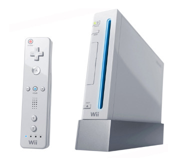

RetroArch Wii
This is a port of RetroArch for the Nintendo Wii games console. RetroArch Wii was first released to the public on 23 August 2012 [version 0.9.7]. It is currently at [version 0.9.9].
What do I need to use it on my Wii?
In order to use RetroArch Wii, you must have an Wii games console that has been modified to run unsigned content.
Either one of the following would do:
- A Wii 'soft-modified' with an exploitable game (Legend of Zelda: Twilight Princess, Super Smash Bros. Melee)
- A retail console hard-modified through a commercial modchip
Where to get it?
| Version | Date | URL |
| 0.9.9 | May 2013 | retroarch-gx-wii-v0.9.9-fix1.zip |